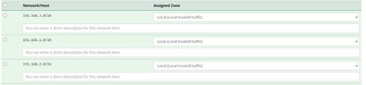
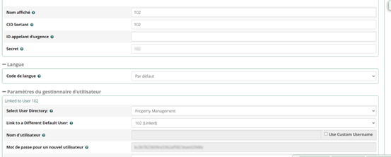

Mise en place du serveur de téléphonie
Installation du serveur de téléphonie
Nous avons choisi de virtualiser notre serveur de téléphonie.
Pour cela nous installons VirtualBox afin de créer une machine virtuelle
visant à héberger le serveur de téléphonie (IPBX virtuel)
Pour commencer, il faut créer une nouvelle Machine virtuelle sans iso avec pour OS linux suivre les étapes et allouer 1.2Go de ram.
Par la suite, avant de démarrer la VM, il faut mettre en disque de démarrage l’ISO téléchargé sur le site de asterisk.
Puis on changer l’ordre de BOOT par le disque de démarrage, puis on lancer la VM.
Suivre les étapes et une fois installé, supprimer le disque de démarrage et relancer.
Pour finir se connecter à l’ipbx virtuel, dont on a ajouté l’adresse MAC avec une IP dans le DHCP.
L’ipbx est maintenant prêt à être configuré
Configuration de FREEPBX
Maintenant que notre machine virtuelle est installer, nous allons créer des utilisateurs avec chacun un numéro ainsi qu'une messagerievocale
1. Les utilisateurs
On se connecter à la VM via son interface graphique en tapant l’IP de la VM dans le navigateur.Pour commencer nous allons ajouter nos réseaux dans FREEPBX ainsi que des utilisateurs
Puis on ajoute les réseaux désirés.

Maintenant, nous ajoutons les utilisateurs

Nous venons de configurer les utilisateurs de notre service de téléphonie, nous pouvons maintenant passer des appel à l'aide de softphone sur nos machines clientes.
2. La messagerie vocale
On exécute ensuite la commande suivante pour activer le NAT sur le routeur :
Router#conf t
Router(config)#ip nat inside source list 100 interface gi0/0/1 overload
Elle permet de dire que les adresses IP de notre réseau interne (défini par l'ACL 100) vont être traduites en l'adresse IP de l'interface gi0/0/1.